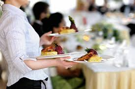

While working as a house keeper I've learned a disciplined to work based on the protocol to avoid any trouble.
While working as food and beverage worker I've learned on how to deal with other people and how to carefully deal with a different sittuation.
Given a chance to learnt basic work and protocol based on my studies at Archive Library Seri Iskandar is one of the best experience as it helps me to get to know more about my possible work.